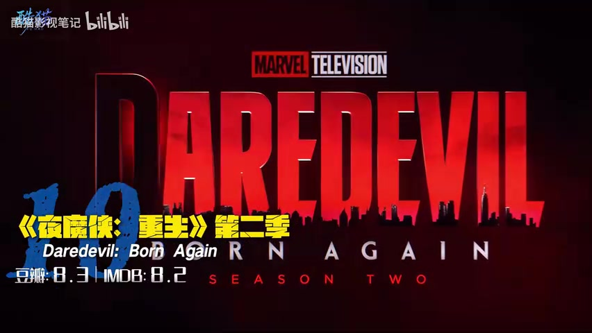
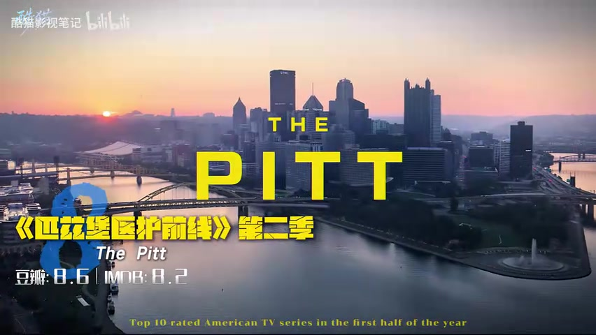
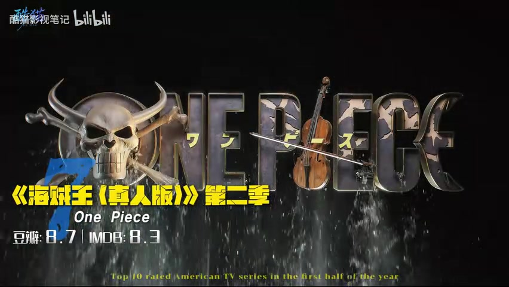
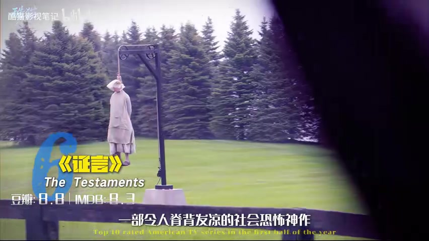
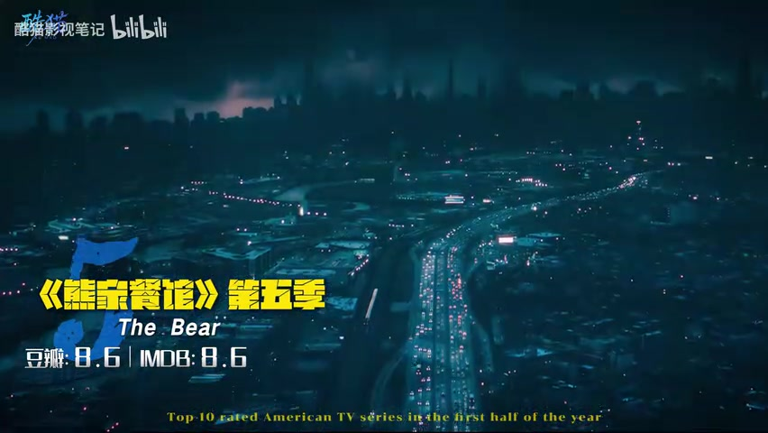
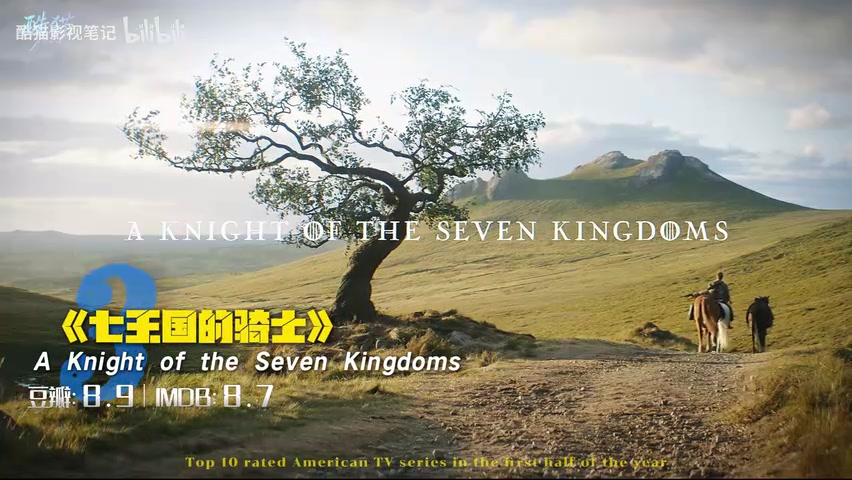

00:00–00:10
开场：十部平台招牌，直接倒序开讲
视频没有铺垫太久。旁白先把 2026 年上半年美剧圈形容成“修罗场”，接着说明这是一份评分前十榜单，要把各平台的招牌作品放在一起看看。榜单采用倒序结构，每部剧只用二十多秒抓一个卖点，整体语速很快。
“最新出炉的上半年评分前十美剧，直接把各大平台的顶级招牌甩在桌上，看看哪盘才是你的菜。” — 视频旁白，约 00:03
00:10–01:01
第十至第九：先用拳头开场，再驶进南德州
第十名是《夜魔侠：重生》第二季。UP 主把重点放在走廊近身动作戏和暗黑压抑的文戏气质上，认为作品找回了街头超级英雄的质感。这里的“找回尊严”是旁白的个人评价，不是客观测评结论。

第九名《达顿牧场》把场景换成南德州。视频称泰勒·谢里丹退到制片席，但贝丝和瑞普的角色气质仍然鲜明；新牧场与当地势力的冲突，被概括成一场不拖泥带水的西部博弈。
01:01–01:52
第八至第七：急诊室按秒推进，草帽团继续出海
第八名《匹兹堡医护前线》第二季主打实时感：旁白称每一集对应急诊室真实发生的一小时，缺人、缺钱、缺药，还要处理突发状况。视频也给出保留意见——相较第一季“9.5 分的神级开局”，第二季在 UP 主看来略逊一筹。

第七名是《海贼王（真人版）》第二季。视频的判断很直接：只要投入和诚意足够，漫改并非注定失败。阿拉巴斯坦篇的场景、乔巴等角色亮相和继续出海的追梦气氛，构成这一段的三个卖点。

01:52–02:42
第六至第五：从反乌托邦的希望，切到高压厨房
第六名《证言》被视频称为《使女的故事》的正统续作，时间线向后推进十五年。旁白把它与前作区分开：前作强调无处可逃的窒息，这一篇章则让三位年轻女性的命运交织，出现“星星之火可以燎原”的希望。

第五名《熊家餐馆》第五季回到那间令人焦虑的厨房。视频称本季围绕米其林评级继续加压，并提到配乐转向交响乐；旁白最看重的仍是“混乱中的自我救赎”，即高压表面下的治愈感。

02:42–03:36
第四至第三：一部安放疲惫，一部回到骑士故事
第四名《诊疗中》第三季被安排为快节奏时代的“避风港”。心理医生自己一地鸡毛，却还要面对更疯狂的病人；视频认为这种碰撞能让人先笑，随后被温情击中，并提到双平台 8.8 分和哈里森·福特的加盟。
第三名《七王国的骑士》则被形容为《权力的游戏》宇宙里少见的“阳间之作”。视频刻意把它与权力漩涡、死亡反转拉开距离，把焦点留给流浪骑士邓克和侍从伊戈。旁白还援引乔治·R·R·马丁对改编的公开肯定作为支持。

03:36–04:28
第二至第一：巨龙正面开战，女性双主角完成收官
第二名《龙之家族》第三季用工业规模冲到榜单前列。旁白描述了巨龙喷火、战船碰撞的场面，并引用海外 IMDb 9.2 分说明观众对黑绿两党的家族宿命仍有兴趣。分数和“无冕之王”等说法均来自视频，页面不作外部核验。
第一名《绝望写手》第五季把榜单收在喜剧上。视频称其获得 24 项艾美奖提名，并把本季视为全剧收官：一位脱口秀传奇与年轻编剧在试探、较量和互相成就中走向结局。UP 主尤其肯定大结局的反转，以及作品“先让人笑出声、随后击中灵魂”的能力。
“它是那种真正能让你笑出声来，随后又感到灵魂被震颤的高级喜剧。” — 视频旁白，约 04:23；据语音语义校正明显识别误差